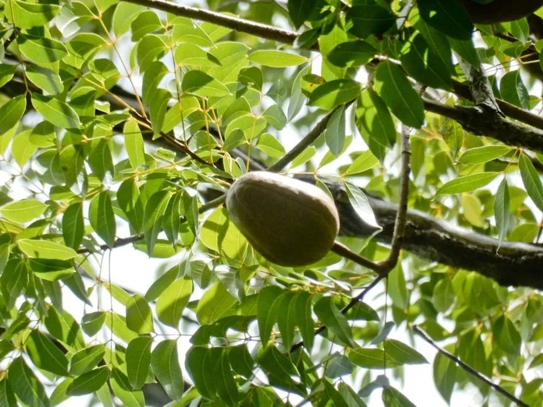

乔木 · 植物界
桃花心木 Swietenia mahagoni

楝科常绿乔木，木材红褐有光泽、纹理华丽，是世界著名的高级家具与乐器用材，原产加勒比海岛屿。
- 分类
- 门被子植物门纲木兰纲目无患子目科楝科属桃花心木属
- 栖息环境
- 海拔 800 米以下的热带海岸与低山丘陵，喜高温多湿
- 地理分布
- 原产古巴、牙买加、多米尼加等加勒比海岛屿；中国广东、海南、云南引种
- 保护级别
- IUCN 濒危（EN）；中国未列入国家重点保护野生植物名录
物种志
桃花心木为楝科桃花心木属常绿乔木，高 20–30 米，树冠开展，树皮灰褐色、块状开裂。偶数羽状复叶，小叶 4–6 对，卵形至斜披针形，全缘，表面深绿有光泽。花小，黄绿色，组成腋生的圆锥花序，花期 4–5 月；果实为木质蒴果，卵形，成熟时 5 瓣开裂，内含多数带翅的种子，果期 10–12 月。
桃花心木原产古巴、牙买加、多米尼加等加勒比海岛屿，是西印度群岛的特有树种，中国广东、海南、云南、福建等地有引种。它喜高温多湿和充足阳光，适宜深厚肥沃、排水良好的土壤，幼树稍耐阴。木材红褐色至暗红色，纹理通直或呈波浪状，刨面光泽美丽，干燥后不易变形，是制作高级家具、钢琴、小提琴与游艇内饰的上等材料。由于长期过度采伐，野生资源锐减，IUCN 将其列为濒危物种。
形态与习性
- 株高20–30 m，树冠开展
- 花期4–5 月，花小、黄绿色
- 果期10–12 月，蒴果木质、5 瓣开裂
- 光照喜光，幼树稍耐阴
- 水分喜湿润，忌长期积水
- 土壤深厚肥沃、排水良好的壤土
- 主要用途高级家具、钢琴与游艇内饰、雕刻
趣味知识
- 桃花心木木材红褐有光泽，刨光后纹理如波，是制作钢琴的经典材料。
- 桃花心木的种子带翅，成熟后从开裂的蒴果中散出，随风传播。
- 由于野生资源锐减，桃花心木被 IUCN 列为濒危物种，贸易受到管制。
- 同属的大叶桃花心木在热带地区栽培更广，木材常与本品混称。